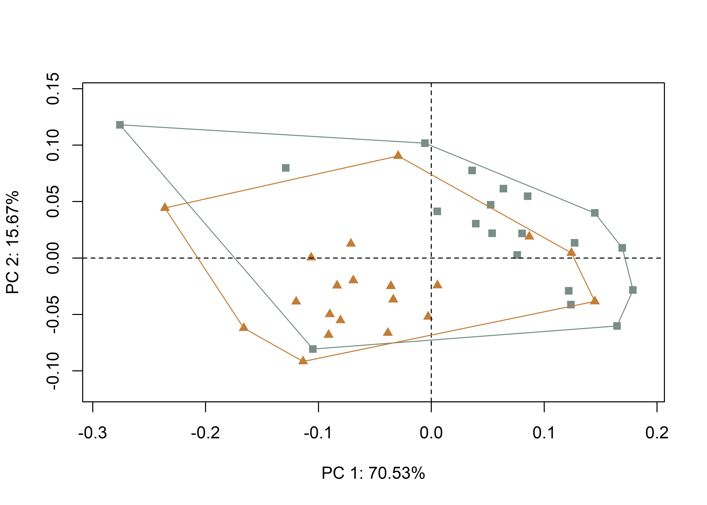
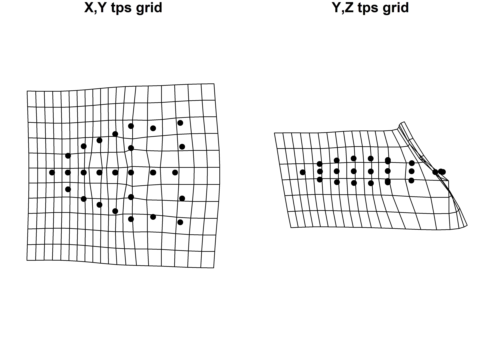
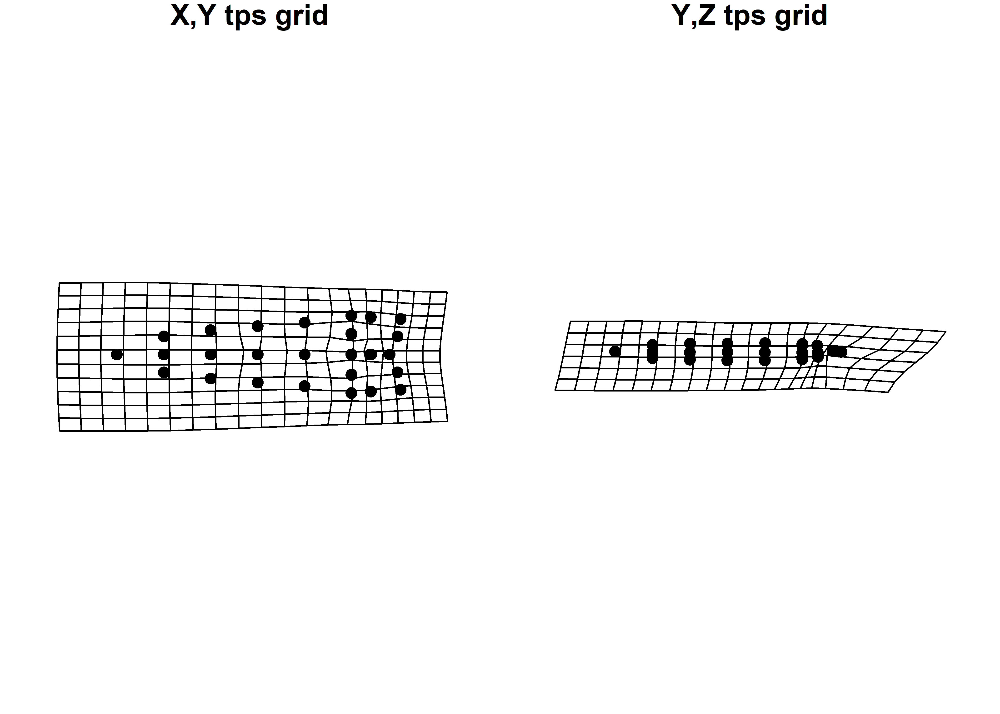
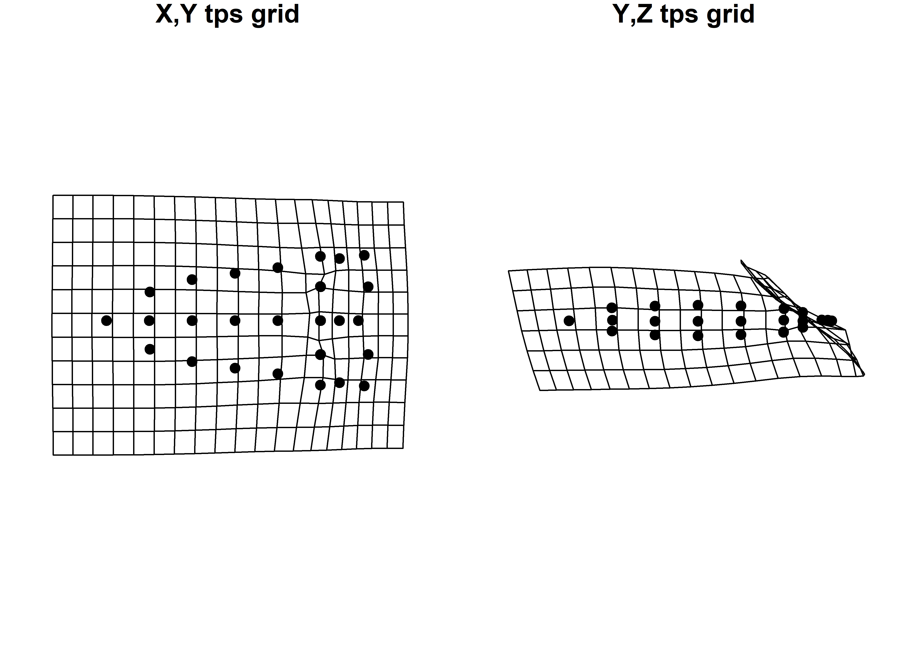
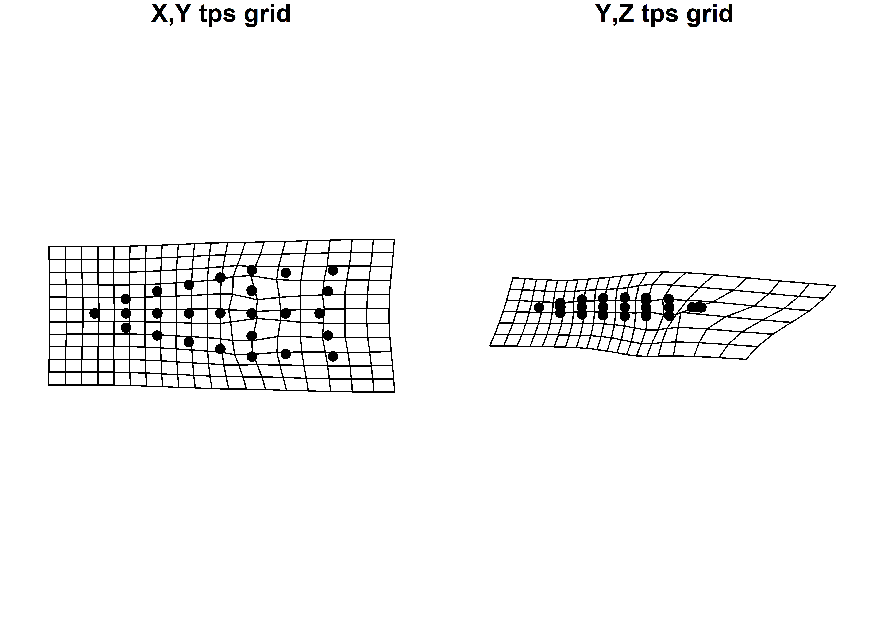
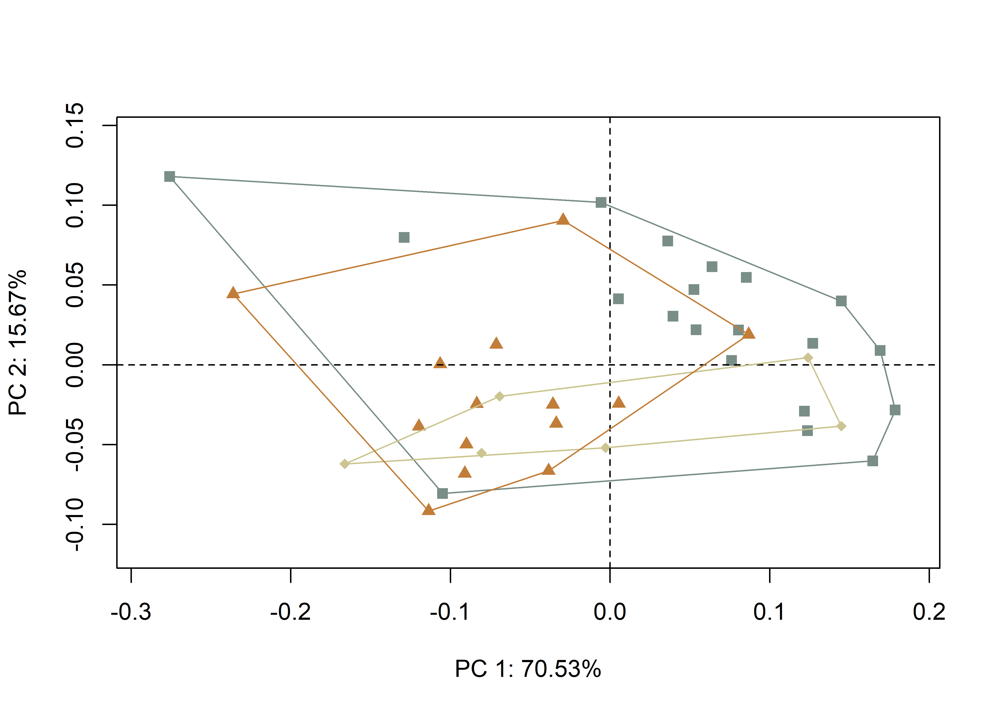
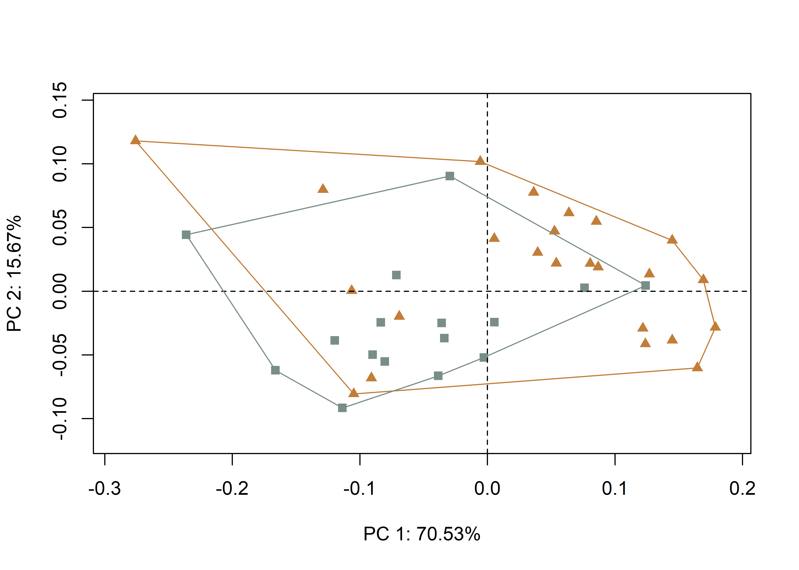
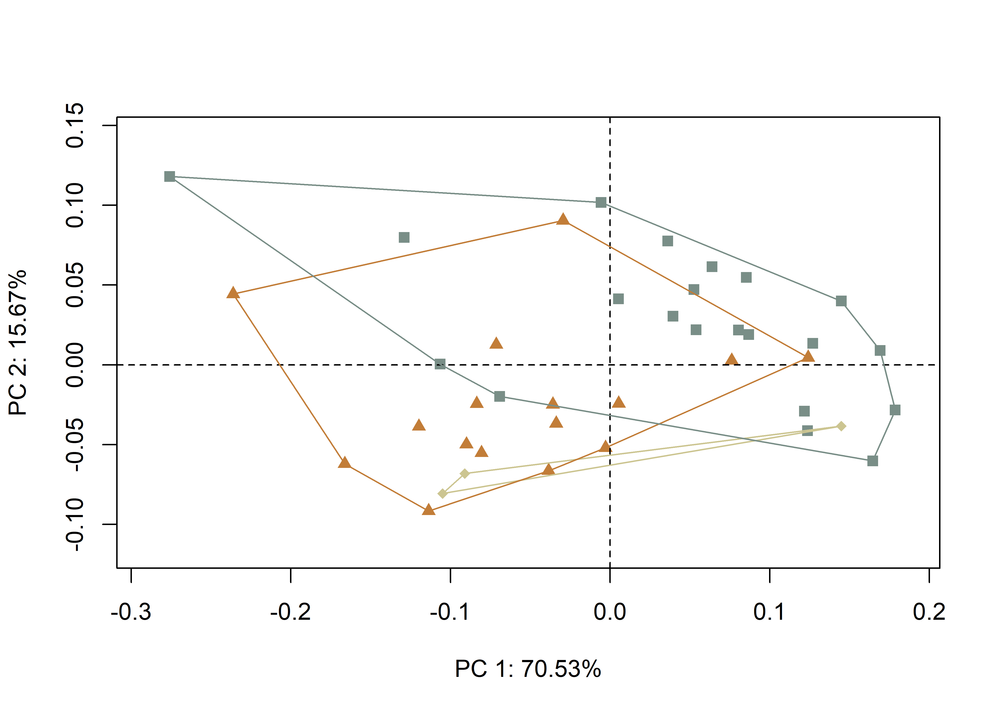

Chapter 5 Bilateral Asymmetry
5.1 Load packages + data
# load packages
# devtools::install_github("geomorphR/geomorph", ref = "Stable", build_vignettes = TRUE)
library(geomorph)## Loading required package: RRPP## Loading required package: rgl## -- Attaching packages ------------------------------------------------------------------------- tidyverse 1.3.0 --## v ggplot2 3.3.2 v purrr 0.3.4
## v tibble 3.0.3 v dplyr 1.0.2
## v tidyr 1.1.2 v stringr 1.4.0
## v readr 1.3.1 v forcats 0.5.0## -- Conflicts ---------------------------------------------------------------------------- tidyverse_conflicts() --
## x dplyr::filter() masks stats::filter()
## x dplyr::lag() masks stats::lag()library(wesanderson)
# setwd
setwd(getwd())
# read GM data
source('readmulti.csv.R')
# read .csv files
setwd("./data")
filelist <- list.files(pattern = ".csv")
coords <- readmulti.csv(filelist)
setwd("../")
# read qualitative data
qdata <- read.csv("qdata.csv", header = TRUE, row.names = 1)
qdata <- qdata[match(dimnames(coords)[[3]],rownames(qdata)),]
land.pairs<-read.csv("asymmetry1.csv",header=TRUE)
ind<-rep(1:length(filelist))
# print qdata
knitr::kable(qdata, align = "cccc", caption = "Attributes included in qdata.")| heart.out | heart.reg | bev | bev.type | |
|---|---|---|---|---|
| 11AI225 | H | H | y | unifacial.bimarginal |
| 11HE445 | N | P | n | no.bevel |
| HK49_1462 | N | I | n | no.bevel |
| HK49_2 | N | I | n | no.bevel |
| HK49_3022 | N | I | n | no.bevel |
| HK49_3823 | N | I | n | no.bevel |
| HK49_4 | N | I | n | no.bevel |
| HK49_5928 | N | I | y | alternate |
| HK49_5961 | N | I | n | no.bevel |
| HK49_7 | N | I | y | unifacial.bimarginal |
| KeilMangold10 | H | H | y | alternate |
| KeilMangold13 | H | H | y | alternate |
| KeilMangold14 | H | H | y | alternate |
| KeilMangold17 | H | H | y | alternate |
| KeilMangold24 | H | H | y | alternate |
| KeilMangold3 | H | H | y | alternate |
| KeilMangold42 | H | H | y | alternate |
| KeilMangold64 | H | H | y | alternate |
| KeilMangold8 | H | H | y | alternate |
| KeilMangold90 | H | H | y | alternate |
| Kinzer46 | N | P | n | no.bevel |
| Kinzer49 | N | P | n | no.bevel |
| Kinzer50 | N | P | y | alternate |
| Leprechaun11MS1983FSI800-5 | H | H | y | alternate |
| MA1699p1 | H | H | y | alternate |
| MA1699p3 | H | H | n | no.bevel |
| McL4_158 | N | I | y | alternate |
| McL4_614 | N | I | n | no.bevel |
| McL7_101 | N | I | n | no.bevel |
| McL7_168 | N | I | n | no.bevel |
| Nochta11MS128BFSI267-1 | H | H | y | alternate |
| Nochta11MS128bFSIPP1001 | H | H | y | alternate |
| Nochta11MS128BFSIPP2495 | H | H | y | alternate |
| Nochta11MS128BFSIPP3305 | H | H | y | alternate |
| Nochta11MS12BFIS800-168 | H | H | y | alternate |
| OH1_176 | N | I | n | no.bevel |
| ReedVoss2 | H | H | y | alternate |
| TR10_4 | N | I | n | no.bevel |
| Welton1 | N | P | n | no.bevel |
| Welton5 | N | P | y | unifacial.bimarginal |
5.2 Generalized Procrustes Analysis
# gpa for bilateral (object) asymmetry
res.bilat <- bilat.symmetry(coords,
ind = ind,
object.sym = TRUE,
land.pairs = land.pairs,
RRPP = TRUE,
iter = 9999,
print.progress = FALSE)
summary(res.bilat)##
## Call:
## bilat.symmetry(A = coords, ind = ind, object.sym = TRUE, land.pairs = land.pairs,
## iter = 9999, RRPP = TRUE, print.progress = FALSE)
##
##
## Symmetry (data) type: Object
##
## Type I (Sequential) Sums of Squares and Cross-products
## Randomized Residual Permutation Procedure Used
## 10000 Permutations
##
## Shape ANOVA
## Df SS MS Rsq F Z Pr(>F)
## ind 39 1.42157 0.036450 0.94254 18.2418 13.2113 1e-04 ***
## side 1 0.00873 0.008728 0.00579 4.3681 2.8654 0.0015 **
## ind:side 39 0.07793 0.001998 0.05167
## Total 79 1.50822
## ---
## Signif. codes: 0 '***' 0.001 '**' 0.01 '*' 0.05 '.' 0.1 ' ' 1# symmetric shape
symm.shape <- res.bilat$symm.shape[,1:2,]
symm.shape2 <- res.bilat$symm.shape[,2:3,]
# plot all specimens in 2D
plotAllSpecimens(symm.shape)(#fig:symm.shape-1)Symmetric shape component plotted in 2D.
(#fig:symm.shape-2)Symmetric shape component plotted in 2D.
# asymmetric shape
asymm.shape <- res.bilat$asymm.shape[,1:2,]
asymm.shape2 <- res.bilat$asymm.shape[,2:3,]
# plot all specimens in 2D
plotAllSpecimens(asymm.shape)(#fig:asymm.shape-1)Asymmetric shape component plotted in 2D.
(#fig:asymm.shape-2)Asymmetric shape component plotted in 2D.
5.3 Principal Components Analysis
# geomorph data frame
gdf <- geomorph.data.frame(shape = symm.shape,
ashape = asymm.shape,
heart = qdata$heart.out,
hreg = qdata$heart.reg,
bev.1 = qdata$bev,
bev.2 = qdata$bev.type)
# attributes for boxplots
heart <- qdata$heart.out # heartland in/out
hreg <- qdata$heart.reg # heartland region
bev.1 <- qdata$bev # beveled yes/no
bev.2 <- qdata$bev.type # type of beveling
# principal components analysis
pca<-gm.prcomp(res.bilat$symm.shape)
summary(pca)##
## Ordination type: Principal Component Analysis
## Centering and projection: OLS
## Number of observations 40
## Number of vectors 40
##
## Importance of Components:
## Comp1 Comp2 Comp3 Comp4
## Eigenvalues 0.01285488 0.002855061 0.0009733823 0.0005796444
## Proportion of Variance 0.70533461 0.156654405 0.0534085330 0.0318045200
## Cumulative Proportion 0.70533461 0.861989012 0.9153975448 0.9472020648
## Comp5 Comp6 Comp7 Comp8
## Eigenvalues 0.0002657286 0.0001338689 0.000119566 8.301147e-05
## Proportion of Variance 0.0145802687 0.0073452560 0.006560469 4.554758e-03
## Cumulative Proportion 0.9617823335 0.9691275895 0.975688058 9.802428e-01
## Comp9 Comp10 Comp11 Comp12
## Eigenvalues 7.314427e-05 4.530353e-05 4.131199e-05 3.039418e-05
## Proportion of Variance 4.013354e-03 2.485760e-03 2.266748e-03 1.667699e-03
## Cumulative Proportion 9.842562e-01 9.867419e-01 9.890087e-01 9.906764e-01
## Comp13 Comp14 Comp15 Comp16
## Eigenvalues 2.804256e-05 2.340013e-05 1.910427e-05 1.616344e-05
## Proportion of Variance 1.538667e-03 1.283942e-03 1.048232e-03 8.868719e-04
## Cumulative Proportion 9.922150e-01 9.934990e-01 9.945472e-01 9.954341e-01
## Comp17 Comp18 Comp19 Comp20
## Eigenvalues 1.471208e-05 1.258723e-05 1.043279e-05 8.865047e-06
## Proportion of Variance 8.072372e-04 6.906492e-04 5.724370e-04 4.864164e-04
## Cumulative Proportion 9.962413e-01 9.969320e-01 9.975044e-01 9.979908e-01
## Comp21 Comp22 Comp23 Comp24
## Eigenvalues 8.352279e-06 6.789102e-06 5.408370e-06 3.602789e-06
## Proportion of Variance 4.582813e-04 3.725114e-04 2.967520e-04 1.976815e-04
## Cumulative Proportion 9.984491e-01 9.988216e-01 9.991184e-01 9.993161e-01
## Comp25 Comp26 Comp27 Comp28
## Eigenvalues 3.059238e-06 2.293286e-06 1.688508e-06 1.397739e-06
## Proportion of Variance 1.678574e-04 1.258304e-04 9.264676e-05 7.669257e-05
## Cumulative Proportion 9.994839e-01 9.996097e-01 9.997024e-01 9.997791e-01
## Comp29 Comp30 Comp31 Comp32
## Eigenvalues 1.157561e-06 8.024932e-07 5.246637e-07 4.544485e-07
## Proportion of Variance 6.351425e-05 4.403201e-05 2.878778e-05 2.493514e-05
## Cumulative Proportion 9.998426e-01 9.998866e-01 9.999154e-01 9.999404e-01
## Comp33 Comp34 Comp35 Comp36
## Eigenvalues 3.725795e-07 3.178541e-07 1.453477e-07 1.258412e-07
## Proportion of Variance 2.044307e-05 1.744035e-05 7.975087e-06 6.904785e-06
## Cumulative Proportion 9.999608e-01 9.999782e-01 9.999862e-01 9.999931e-01
## Comp37 Comp38 Comp39 Comp40
## Eigenvalues 9.328842e-08 2.639531e-08 5.768687e-09 2.535178e-33
## Proportion of Variance 5.118644e-06 1.448285e-06 3.165222e-07 1.391027e-31
## Cumulative Proportion 9.999982e-01 9.999997e-01 1.000000e+00 1.000000e+005.4 Define models
5.4.1 Hypothesis 1
5.4.2 Hypothesis 2
5.4.3 Hypothesis 3
5.4.4 Hypothesis 4
5.5 Test Hypothesis 1 (Geo Symm)
Hypothesis 1 assesses whether there is a difference in the symmetric shape of Dalton points found in and out of the heartland.
A residual randomization permutation procedure (RRPP; n = 10,000 permutations) was used for all Procrustes ANOVAs (Adams and Collyer 2015; Collyer and Adams 2018), which has higher statistical power and a greater ability to identify patterns in the data should they be present (Anderson and Ter Braak 2003). To assess whether shape changes with size (allometry), and differs by group (region), Procrustes ANOVAs (Goodall 1991) were also run that enlist effect-sizes (zscores) computed as standard deviates of the generated sampling distributions (Collyer, Sekora, and Adams 2015).

(#fig:lm3d3.a1.h1.asymm)Hypothesis 1 considers whether Dalton points discovered in (left) and out (right) of the Heartland differ in morphology.
5.5.1 Principal Components Analysis (H1)
# set plot parameters to plot by heartland in (H) and out (N)
pch.gps.heart <- c(15,17)[as.factor(heart)]
col.gps.heart <- wes_palette("Moonrise2")[as.factor(heart)]
col.hull <- c("#798E87","#C27D38")
# plot pca by heartland in (H) and out (N)
pc.plot1 <- plot(pca,
asp = 1,
pch = pch.gps.heart,
col = col.gps.heart)
shapeHulls(pc.plot1,
groups = heart,
group.cols = col.hull)
# mshape
M <- mshape(res.bilat$symm.shape)
# shapes at the minima and maxima of PC1 and PC2 using min and max
# corresponding to the x/y values in the four PC plots
pc <- pca$x[,1] # x-axis
preds <- shape.predictor(res.bilat$symm.shape,
x = pc, Intercept = FALSE,
pred1 = min(pc),
pred2 = max(pc))
plotRefToTarget(M, preds$pred1) # minimum x-axis

pc <- pca$x[,2] # y-axis
preds<-shape.predictor(res.bilat$symm.shape,
x = pc, Intercept = FALSE,
pred1 = min(pc),
pred2 = max(pc))
plotRefToTarget(M, preds$pred1) # minimum y-axis

5.5.2 ANOVA
##
## Analysis of Variance, using Residual Randomization
## Permutation procedure: Randomization of null model residuals
## Number of permutations: 10000
## Estimation method: Ordinary Least Squares
## Sums of Squares and Cross-products: Type I
## Effect sizes (Z) based on F distributions
##
## Df SS MS Rsq F Z Pr(>F)
## heart 1 0.12531 0.125310 0.18657 8.7159 2.6952 0.001 **
## Residuals 38 0.54634 0.014377 0.81343
## Total 39 0.67165
## ---
## Signif. codes: 0 '***' 0.001 '**' 0.01 '*' 0.05 '.' 0.1 ' ' 1
##
## Call: procD.lm(f1 = shape ~ heart, iter = 9999, data = gdf, print.progress = FALSE)##
## Analysis of Variance, using Residual Randomization
## Permutation procedure: Randomization of null model residuals
## Number of permutations: 10000
## Estimation method: Ordinary Least Squares
## Sums of Squares and Cross-products: Type I
## Effect sizes (Z) based on F distributions
##
## Df SS MS Rsq F Z Pr(>F)
## heart 1 0.006953 0.0069530 0.07055 2.8845 1.9694 0.0205 *
## Residuals 38 0.091597 0.0024104 0.92945
## Total 39 0.098550
## ---
## Signif. codes: 0 '***' 0.001 '**' 0.01 '*' 0.05 '.' 0.1 ' ' 1
##
## Call: procD.lm(f1 = ashape ~ heart, iter = 9999, data = gdf, print.progress = FALSE)5.6 Test Hypothesis 2 (Geo Symm)
Hypothesis 2 assesses whether there is a difference in morphology for Dalton points found in the heartland, the interior, and the northern periphery.
A residual randomization permutation procedure (RRPP; n = 10,000 permutations) was used for all Procrustes ANOVAs (Adams and Collyer 2015; Collyer and Adams 2018), which has higher statistical power and a greater ability to identify patterns in the data should they be present (Anderson and Ter Braak 2003). To assess whether shape changes with size (allometry), and differs by group (region), Procrustes ANOVAs (Goodall 1991) were also run that enlist effect-sizes (zscores) computed as standard deviates of the generated sampling distributions (Collyer, Sekora, and Adams 2015).

(#fig:lm3d3.a1.h2.asymm)Hypothesis 2 considers whether Dalton points discovered in the heartland (left), interior (center), and northern periphery (right) differ in morphology.
5.6.1 Principal Components Analysis (H2)
# set plot parameters to plot by heartland + regions
pch.gps.hreg <- c(15,17,18)[as.factor(hreg)]
col.gps.hreg <- wes_palette("Moonrise2")[as.factor(hreg)]
col.hull.2 <- c("#798E87","#CCC591","#C27D38")
# plot pca by heartland + regions
pc.plot2 <- plot(pca,
asp = 1,
pch = pch.gps.hreg,
col = col.gps.hreg)
shapeHulls(pc.plot2,
groups = hreg,
group.cols = col.hull.2)
5.6.2 ANOVA
##
## Analysis of Variance, using Residual Randomization
## Permutation procedure: Randomization of null model residuals
## Number of permutations: 10000
## Estimation method: Ordinary Least Squares
## Sums of Squares and Cross-products: Type I
## Effect sizes (Z) based on F distributions
##
## Df SS MS Rsq F Z Pr(>F)
## hreg 2 0.14447 0.072235 0.2151 5.0699 2.5536 0.0021 **
## Residuals 37 0.52718 0.014248 0.7849
## Total 39 0.67165
## ---
## Signif. codes: 0 '***' 0.001 '**' 0.01 '*' 0.05 '.' 0.1 ' ' 1
##
## Call: procD.lm(f1 = shape ~ hreg, iter = 9999, data = gdf, print.progress = FALSE)# pairwise comparison of LS means = which differ?
sh.hreg <- pairwise(fit.shape.hreg,
groups = qdata$heart.reg)
summary(sh.hreg,
confidence = 0.95,
test.type = "dist")##
## Pairwise comparisons
##
## Groups: H I P
##
## RRPP: 10000 permutations
##
## LS means:
## Vectors hidden (use show.vectors = TRUE to view)
##
## Pairwise distances between means, plus statistics
## d UCL (95%) Z Pr > d
## H:I 0.12590420 0.07895878 4.3500094 0.0005
## H:P 0.08930659 0.10563555 1.3079200 0.1123
## I:P 0.06754233 0.11130512 0.3408444 0.3073##
## Analysis of Variance, using Residual Randomization
## Permutation procedure: Randomization of null model residuals
## Number of permutations: 10000
## Estimation method: Ordinary Least Squares
## Sums of Squares and Cross-products: Type I
## Effect sizes (Z) based on F distributions
##
## Df SS MS Rsq F Z Pr(>F)
## hreg 2 0.010644 0.0053219 0.108 2.24 1.94 0.023 *
## Residuals 37 0.087906 0.0023758 0.892
## Total 39 0.098550
## ---
## Signif. codes: 0 '***' 0.001 '**' 0.01 '*' 0.05 '.' 0.1 ' ' 1
##
## Call: procD.lm(f1 = ashape ~ hreg, iter = 9999, data = gdf, print.progress = FALSE)# pairwise comparison of LS means = which differ?
sh.hreg <- pairwise(fit.shape.hreg.asymm,
groups = qdata$heart.reg)
summary(sh.hreg,
confidence = 0.95,
test.type = "dist")##
## Pairwise comparisons
##
## Groups: H I P
##
## RRPP: 10000 permutations
##
## LS means:
## Vectors hidden (use show.vectors = TRUE to view)
##
## Pairwise distances between means, plus statistics
## d UCL (95%) Z Pr > d
## H:I 0.02895133 0.02623800 2.3599297 0.0209
## H:P 0.03125775 0.03531642 1.2656850 0.1125
## I:P 0.02964415 0.03676520 0.8708469 0.18125.7 Test Hypothesis 3 (Techno Symm)
Hypothesis 3 assesses whether there is a discernible difference in morphology for Dalton points that are beveled.
A residual randomization permutation procedure (RRPP; n = 10,000 permutations) was used for all Procrustes ANOVAs (Adams and Collyer 2015; Collyer and Adams 2018), which has higher statistical power and a greater ability to identify patterns in the data should they be present (Anderson and Ter Braak 2003). To assess whether shape changes with size (allometry), and differs by group (region), Procrustes ANOVAs (Goodall 1991) were also run that enlist effect-sizes (zscores) computed as standard deviates of the generated sampling distributions (Collyer, Sekora, and Adams 2015).

(#fig:lm3d3.a1.h3.asymm)Hypothesis 3 considers whether beveled Dalton points (left) differ in morphology from those that are not beveled (right).
5.7.1 Principal Components Analysis (H3)
# set plot parameters to plot by beveled y and n
pch.gps.bev.1 <- c(15,17)[as.factor(bev.1)]
col.gps.bev.1 <- wes_palette("Moonrise2")[as.factor(bev.1)]
col.hull.3 <- c("#C27D38","#798E87")
# plot pca by heartland in (H) and out (N)
pc.plot3 <- plot(pca,
asp = 1,
pch = pch.gps.bev.1,
col = col.gps.bev.1)
shapeHulls(pc.plot3,
groups = bev.1,
group.cols = col.hull.3)
5.7.2 ANOVA
##
## Analysis of Variance, using Residual Randomization
## Permutation procedure: Randomization of null model residuals
## Number of permutations: 10000
## Estimation method: Ordinary Least Squares
## Sums of Squares and Cross-products: Type I
## Effect sizes (Z) based on F distributions
##
## Df SS MS Rsq F Z Pr(>F)
## bev.1 1 0.09909 0.099085 0.14753 6.5762 2.3567 0.0046 **
## Residuals 38 0.57256 0.015067 0.85247
## Total 39 0.67165
## ---
## Signif. codes: 0 '***' 0.001 '**' 0.01 '*' 0.05 '.' 0.1 ' ' 1
##
## Call: procD.lm(f1 = shape ~ bev.1, iter = 9999, data = gdf, print.progress = FALSE)# ANOVA: do asymmetric dalton projectile point shapes differ by beveling?
anova(fit.shape.bev.1.asymm)##
## Analysis of Variance, using Residual Randomization
## Permutation procedure: Randomization of null model residuals
## Number of permutations: 10000
## Estimation method: Ordinary Least Squares
## Sums of Squares and Cross-products: Type I
## Effect sizes (Z) based on F distributions
##
## Df SS MS Rsq F Z Pr(>F)
## bev.1 1 0.006661 0.0066606 0.06759 2.7544 1.8884 0.027 *
## Residuals 38 0.091889 0.0024181 0.93241
## Total 39 0.098550
## ---
## Signif. codes: 0 '***' 0.001 '**' 0.01 '*' 0.05 '.' 0.1 ' ' 1
##
## Call: procD.lm(f1 = ashape ~ bev.1, iter = 9999, data = gdf, print.progress = FALSE)5.8 Test Hypothesis 4 (Techno Symm)
Hypothesis 4 assesses whether there is a discernible difference in the morphology of specific beveling types associated with Dalton points.
A residual randomization permutation procedure (RRPP; n = 10,000 permutations) was used for all Procrustes ANOVAs (Adams and Collyer 2015; Collyer and Adams 2018), which has higher statistical power and a greater ability to identify patterns in the data should they be present (Anderson and Ter Braak 2003). To assess whether shape changes with size (allometry), and differs by group (region), Procrustes ANOVAs (Goodall 1991) were also run that enlist effect-sizes (zscores) computed as standard deviates of the generated sampling distributions (Collyer, Sekora, and Adams 2015).

(#fig:lm3d3.a1.h4.asymm)Hypothesis 4 considers whether discrete beveling practices articulate with differences in the morphology of Dalton points
5.8.1 Principal Components Analysis (H4)
# set plot parameters to plot by bevel type
pch.gps.bev.2 <- c(15,17,18)[as.factor(bev.2)]
col.gps.bev.2 <- wes_palette("Moonrise2")[as.factor(bev.2)]
col.hull.4 <- c("#CCC591","#C27D38","#798E87")
# plot pca by bevel type
pc.plot4 <- plot(pca,
asp = 1,
pch = pch.gps.bev.2,
col = col.gps.bev.2)
shapeHulls(pc.plot4,
groups = bev.2,
group.cols = col.hull.4)
5.8.2 ANOVA
##
## Analysis of Variance, using Residual Randomization
## Permutation procedure: Randomization of null model residuals
## Number of permutations: 10000
## Estimation method: Ordinary Least Squares
## Sums of Squares and Cross-products: Type I
## Effect sizes (Z) based on F distributions
##
## Df SS MS Rsq F Z Pr(>F)
## bev.2 2 0.13191 0.065954 0.19639 4.5212 2.3919 0.0042 **
## Residuals 37 0.53974 0.014588 0.80361
## Total 39 0.67165
## ---
## Signif. codes: 0 '***' 0.001 '**' 0.01 '*' 0.05 '.' 0.1 ' ' 1
##
## Call: procD.lm(f1 = shape ~ bev.2, iter = 9999, data = gdf, print.progress = FALSE)# pairwise comparison of LS means = which differ?
sh.bev.2 <- pairwise(fit.shape.bev.2,
groups = qdata$bev.type)
summary(sh.bev.2,
confidence = 0.95,
test.type = "dist")##
## Pairwise comparisons
##
## Groups: alternate no.bevel unifacial.bimarginal
##
## RRPP: 10000 permutations
##
## LS means:
## Vectors hidden (use show.vectors = TRUE to view)
##
## Pairwise distances between means, plus statistics
## d UCL (95%) Z Pr > d
## alternate:no.bevel 0.11362828 0.0754994 3.9736888 0.0017
## alternate:unifacial.bimarginal 0.11181976 0.1415896 1.1094425 0.1420
## no.bevel:unifacial.bimarginal 0.05596569 0.1447172 -0.5392573 0.6562# ANOVA: does asymmetric dalton projectile point shape differ by bev.2?
anova(fit.shape.bev.2.asymm)##
## Analysis of Variance, using Residual Randomization
## Permutation procedure: Randomization of null model residuals
## Number of permutations: 10000
## Estimation method: Ordinary Least Squares
## Sums of Squares and Cross-products: Type I
## Effect sizes (Z) based on F distributions
##
## Df SS MS Rsq F Z Pr(>F)
## bev.2 2 0.009681 0.0048403 0.09823 2.0152 1.6016 0.0519 .
## Residuals 37 0.088869 0.0024019 0.90177
## Total 39 0.098550
## ---
## Signif. codes: 0 '***' 0.001 '**' 0.01 '*' 0.05 '.' 0.1 ' ' 1
##
## Call: procD.lm(f1 = ashape ~ bev.2, iter = 9999, data = gdf, print.progress = FALSE)# pairwise comparison of LS means = which differ?
sh.bev.2 <- pairwise(fit.shape.bev.2.asymm,
groups = qdata$bev.type)
summary(sh.bev.2,
confidence = 0.95,
test.type = "dist")##
## Pairwise comparisons
##
## Groups: alternate no.bevel unifacial.bimarginal
##
## RRPP: 10000 permutations
##
## LS means:
## Vectors hidden (use show.vectors = TRUE to view)
##
## Pairwise distances between means, plus statistics
## d UCL (95%) Z Pr > d
## alternate:no.bevel 0.02873487 0.02516494 2.5943487 0.0148
## alternate:unifacial.bimarginal 0.03391823 0.04881412 0.4342863 0.2957
## no.bevel:unifacial.bimarginal 0.02788011 0.04921448 -0.1898644 0.5247References
Adams, Dean C., and Michael L. Collyer. 2015. “Permutation Tests for Phylogenetic Comparative Analyses of High-Dimensional Shape Data: What you Shuffle Matters.” Evolution 69 (3): 823–9. https://doi.org/10.1111/evo.12596.
Anderson, M. J., and C. J. F. Ter Braak. 2003. “Permutation Tests for Multi-Factoral Analysis of Variance.” Journal of Statistical Computation and Simulation 73 (2): 85–113. https://doi.org/10.1080=0094965021000015558.
Collyer, Michael L., and Dean C. Adams. 2018. “RRPP: An R Package for Fitting Linear Models to High-Dimensional Data using Residual Randomization.” Methods in Ecology and Evolution 9 (7): 1772–9. https://doi.org/https://doi.org/10.1111/2041-210X.13029.
Collyer, M. L., D. J. Sekora, and D. C. Adams. 2015. “A Method for Analysis of Phenotypic Change for Phenotypes Described by High-Dimensional Data.” Heredity 115 (4): 357–65. https://doi.org/10.1038/hdy.2014.75.
Goodall, Colin. 1991. “Procrustes Methods in the Statistical Analysis of Shape.” Journal of the Royal Statistical Society. Series B (Methodological) 53 (2): 285–339.